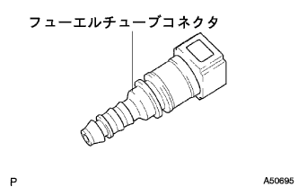

DTC P0171/25 lean abnormality (Bank1) |
DTC P0172/26 rich abnormality (Bank1) |
| DTC No. | DTC detection conditions
| Inspection site |
|---|---|---|
| P0171/25 |
|
|
| P0172/26 |
|
|
| Step 1 | Emotion Control System Inspection |
reference)
|
| ||||
| OK | |
| Step 2 | Fuel Injector ASSY inspection |
Resistance inspection
Use SST (Toyota Electrical Tester) to measure resistance between the injector terminals.
 |
Inspection of injection
Prepare a new fuel tube and remove only the connector.
 |
Connect the SST (injection major ring tool set) and fuel tube connector to the fuel pipe (vehicle side).
 |
Attach the O -ring to the injector.
Attach the SST to the injector.
Set the injector to the female cylinder.
Activate the fuel pump.
 |
Connect the SST to the injector.
Connect SST (EFI Inspection Wire H) to the battery, calculate the average value of fuel injection (15 seconds) 2-3 times.
| Quantity | The difference between each injector |
|---|---|
| 47-58ml | 11ml or less |
Leak inspection
 |
When the SST (EFI Inspection Wire H) is removed from the battery in the above state, confirm that there is no leak from the injector.
|
| ||||
| OK | |
| Step 3 | E.F.I. Water Tenpalacha Sensor Single Inspection |
Resistance inspection
 |
Use SST (Toyota Electrical Tester) to measure resistance between terminals.
| Terminal | conditions | Reference value |
|---|---|---|
| 1 ← → 3 (for E.F.I) | At about 20 ° C | 2-3kΩ |
| 1 ← → 3 (for E.F.I) | At about 80 ° C | 0.2-0.4kΩ |
| 2 ← → Body (for meter) | At about 50 ° C | 160-240Ω |
| 2 ← → Body (for meter) | At about 120 ° C | 17-22Ω |
|
| ||||
| OK | |
| Step 4 | Ignition system inspection |
Spark inspection
Remove the cylinder head cover No.2.
Remove the ignition coil asser.
Take off the spark plug.
Attach a spark plug to the ignition coil asser and connect the connector.
Cut all the fuel -injector assocuters.
Earth a spark plug.
When cranking, confirm that Havana flies.
|
| ||||
| OK | |
| Step 5 | Fuel pressure inspection |
Inspection preparation
|  |
Prepare a new fuel tube and remove only the connector.
Work to prevent fuel outflow (the point isreference)
Remove the fuel tube clamp and separate the fuel tube (fuel tube connector).
 |
Assemble the quick connector, SST (fuel pressure gauge, T -type joint), and instruments prepared for the inspection preparation.
Wipe off the spilled gasoline
Start the engine.
Measure the fuel pressure during idle rotation.
Stop the engine.
Confirm that the fuel pressure does not change for 5 minutes after the engine is stopped.
After the measurement, disconnect the battery minor Star Minal and remove the SST and fuel tube connector while being careful not to scatter gasoline.
Connect the fuel tube (fuel tube connector).
|
| ||||
| OK | |
| Step 6 | Exhaust gas leak inspection site inspection |
|
| ||||
| OK | |
| Step 7 | Tascan data reading (O2 sensor voltage inspection B1S1) |
Warm the oxyzen sensor with 2500R/min for about 90 seconds.
Use Tascan to read the output voltage of the oxyzes ensenza during idling.

|
| ||||
| NG | |
| Step 8 | Wire harness or connector inspection (engine controlled compilation-oxyde ensenza) |
  |
Cut the connector A and B of the engine control compilation the compilation of the engine control.
Use Toyota Electrical Tester to check the conduction and short circuits between the vehicle connector of the engine control compilation composer ← → the oxyzen sensor (the terminal sequence is (terminal sequence).reference).
| Measurement terminal (terminal name) Engine Control Company ← → Oxyzes Ensensa | standard |
|---|---|
| B23 (OXL1) ← → 3 (OX1A) | There is no conduction, there is no short circuit between other terminals and between body earth |
| A28 (E2) ← → 4 (E2) | There is no conduction, there is no short circuit between other terminals and between body earth |
|
| ||||
| OK | ||
| ||
| Step 9 | Activation confirmation operation implementation |
Connect Tascan to DLC3.
Turn on the ignition switch and delete the diagnostic code according to the screen display of Tascan.
In order to confirm the system, a warm -up of oxyzes ensenza is performed by the driving test.
| GO | |
| Step 10 | Diagnostic code reading |
Connect S2000 to DLC3.
Turn on the ignition switch and read the diagnostic cord according to the screen display of Tascan.
Check if DTC P0171/25 is output.
| A | B |
| P0171/25 is not re -emitted | P0171/25 is reappeared |
|
| ||||
| A | |
| Step 11 | Have you ever stopped the engine due to running out of fuel in the past? |
Check if the engine has been stopped (gas missing) due to running out of fuel in the past.
|
| ||||
| Yes | ||
| ||